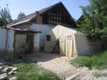

Aid worker diary: Making villages safer in Kyrgyzstan
16 Oct 2012

Muratbek Koshoev, a Kyrgyz native, joined OCHA’s Regional Office for the Caucasus and Central Asia earlier this year as an aid worker. Credit: OCHA
Local people and humanitarians work to reduce the risk of floods.
When Muratbek Koshoev, a Kyrgyz native, joined OCHA’s Regional Office for the Caucasus and Central Asia earlier this year, his country was experiencing an unusually harsh winter and a record number of natural disasters.
Heavy snowfall was nearly three times the annual average, and melting snow and heavy rains caused flash floods across the country. Food stocks, farms, homes and other buildings were heavily damaged, affecting thousands of people.
“When you deal with people who have just suffered losses, all you can think of is that you do not want to let them down,” said Muratbek, who works as a National Disaster Response Adviser in the Kyrgyz capital, Bishkek.
Throughout the winter of 2011-12, UN agencies and humanitarian partners responded to the Government’s requests for assistance, as the extraordinary weather affected growing numbers of people. In late April, flash floods swept through 43 villages in southern Kyrgyzstan.
“We went to visit Kenesh–a rural community in the south of Kyrgyzstan where 30,000 people lived. They were exhausted. By early June, mudflows had swept through their land six times,” said Muratbek. “Agriculture is the only source of income for these people. The Government and humanitarian organizations were helping the community restore their land, but the farmers were fearful that another disaster could strike.”
{kind=link}
The community, located in the foothills of a mountain, is very prone to mudslides. It also has a dysfunctional drainage system that exacerbated the flooding. Muratbek was concerned that the people of Kenesh would continue suffering from repeated floods if nothing was done.
Muratbek made it his mission to ensure that local authorities, Government agencies and humanitarian partners worked together to help reconstruct the entire drainage system in the area. The project is just about to begin. Once it is completed, the 20-year-old system will be in much better shape to handle future disasters.
“It was a great experience to bring together the different stakeholders and jointly help the people of this vulnerable community,” said Muratbek. “The fact that the villagers themselves are involved in the reconstruction, and are contributing to making their community more resilient and better equipped to cope with future disasters, was especially rewarding.”
Reporting by OCHA/ Caucasus and Central Asia